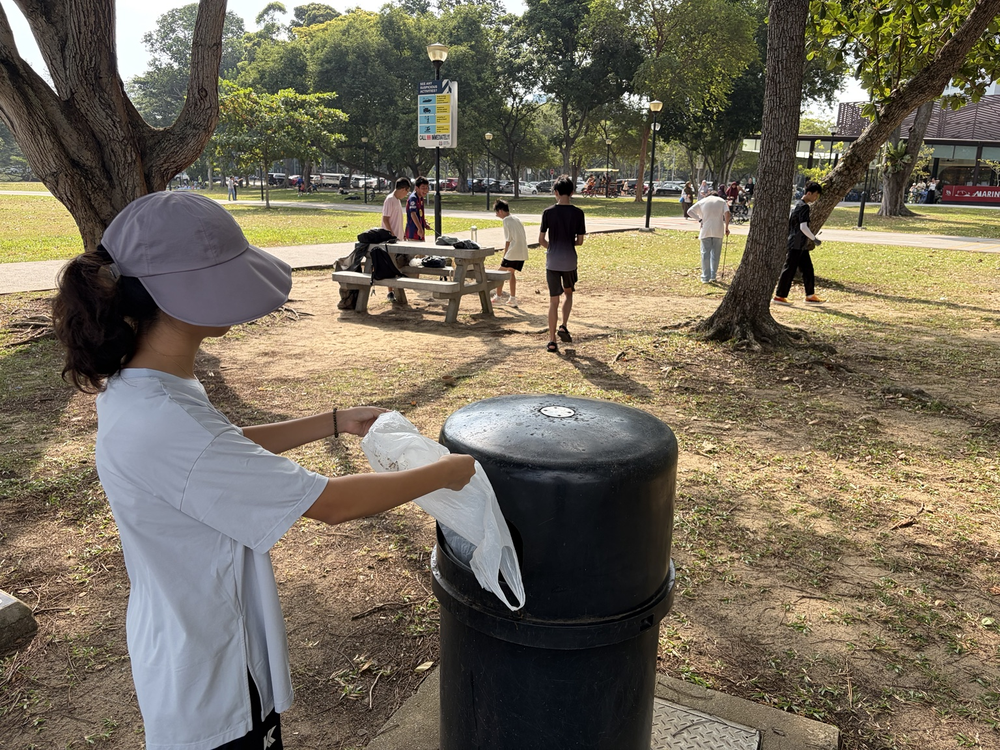
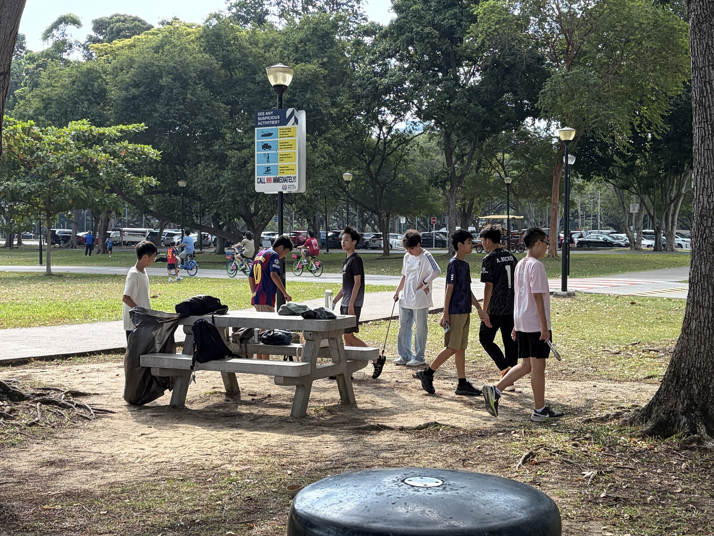

Beach and community clean-up activities in Singapore. Photos supplied by the student/family.
Beach clean-ups are one visible part of my environmental journey. They also remind me that the rubbish we see on land can eventually become an ocean problem.

Beach and community clean-up activities in Singapore. Photos supplied by the student/family.
Notice the single-use plastics you use most often and choose one realistic item to reduce first.
Join an organised clean-up or collect litter responsibly with adult guidance. Use suitable equipment and dispose of waste correctly.
Visit a coast without collecting wildlife. Record what you see through notes, drawings or photographs.
Explain one thing you learned to someone younger. Teaching forces you to understand an idea clearly.

Environmental care has been part of a wider habit of service for me, from community clean-ups to earlier volunteering experiences. This project focuses on the part that connects most directly with the sea.